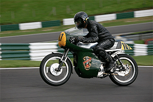

MotoGP
Established as a World Championship by the FIM (Fédération Internationale de Motocyclisme) in 1949, MotoGP™ is now into its 65th year. It is the oldest motorsports championship in the world and the premier class of three racing classes that take to the track on a typical Grand Prix weekend. Formerly labelled ‘500cc’, the championship underwent a change in 2002 with new technical regulations permitting the introduction of four-stroke machinery and increasing the engine capacity to 990cc, thus becoming MotoGP™. From 2007 the rules were altered, limiting engine capacity to 800cc, and once again from 2012, setting the maximum engine displacement at 1000cc. MotoGP™ has been administrated by commercial rights owners Dorna Sports under the supervision of the FIM since 1992.
EARLY DAYS
MotoGP™ has a rich history with Grand Prix events having taken place in every corner of the world throughout the last 64 years. More than 2.2 million people came through the gates of the circuits to watch MotoGP™ in 2012. Italy, Great Britain, Spain, the USA and Australia are just some of the nationalities that have all totalled high numbers in terms of race victories and world titles, the details of which can be found in the Results & Statistics section. As well as the premier class there are also two ultra-competitive World Championship Grand Prix categories, which form part of ‘MotoGP™’. The Moto3™ (formerly 125cc) and Moto2™ (formerly 250cc) World Championships have their own races at each Grand Prix, meaning that by the end of the season three champions are crowned.
A 600cc sidecar championship in the same season was won by Britons Eric Oliver and Denis Jenkinson with Norton machinery, though the sidecar category became a 500cc competition in 1951. The Italian manufacturers such as the aforementioned Mondial and Moto Guzzi firms, along with companies such as Gilera and MV Agusta, dominated the World Championships during the 1950s, reflecting the strength of the country’s motorcycle industry at the time. MV Agusta were particularly prolific late in the decade, taking a clean sweep of World titles across all four categories for three seasons from 1958 to 1960 – while their dominance in the 500cc class was unbroken for 17 years from 1958 until 1974.
THE MODERN AGE

Before the revision of regulations which brought about the move to 990cc 4-stroke competition in the premier class - in line with modern engineering and production trends - a young Italian rider called Valentino Rossi took the last ever 500cc title in 2001 on Honda machinery, having won the 1997 edition of the 125cc championship and the 1999 quarter litre crown with Aprilia. After the re-branding of the World Championship as MotoGP™ in 2002 and the introduction of 990cc racing, Rossi went on to win four further consecutive titles, two with Honda and two after a sensational move to Yamaha.
In recent seasons the lower cylinder categories have been ruled by young European riders preparing for MotoGP™ on Aprilia and Honda bikes, with Dani Perdosa epitomising the trend with three successive titles – one in 125 in 2003 followed by two in 250 – riding for Honda before moving into the premier class. In his first season in MotoGP™ Pedrosa shared the Repsol Honda pit-box with American rider Nicky Hayden, whose aggressive but consistent riding earned him the 2006 title and ended Rossi’s annual procession to glory. At the start of the 2007 season, new rules restricting the number of tyres used on Grand Prix weekends and a reduction in engine size from 990cc to 800cc again levelled the playing field in MotoGP™ – with Bridgestone-equipped Ducati rider Casey Stoner emerging as the first standout rider of the new era, as the runaway 2007 World Champion. In 2008, however, Rossi returned to the pinnacle, taking his sixth premier class title, with Stoner a distant runner-up in the standings.
The 2009 season saw the introduction of a single-tyre rule, as Bridgestone were named the sole suppliers for the MotoGP™ class. Rossi took his seventh title in the premier class after a battle with team-mate Jorge Lorenzo, taking him to within one more of equalling Giacomo Agostini’s all-time record of eight. The 2010 season saw a new name enter into the MotoGP™ class history book as Jorge Lorenzo was crowned World Champion following an exciting season long battle with team mate Rossi for the title. Lorenzo showed superb consistency and remarkable maturity to claim the premier class crown aged just 23 years old. 2011 saw Casey Stoner move to factory Honda, a switch that proved a resounding success. Stoner clinched the 2011 title with a win at Phillip Island, his 9th but not his final victory of the season (he also won the last round in Valencia).
In 2012 as the grid switched to the 1000cc machines it was Yamaha Factory Racing’s Jorge Lorenzo that took the title after finishing second in Phillip Island. He was pushed all the way by Repsol Honda Team’s Dani Pedrosa, while Casey Stoner finished his final season in third, following a mid-season injury, before heading into retirement.